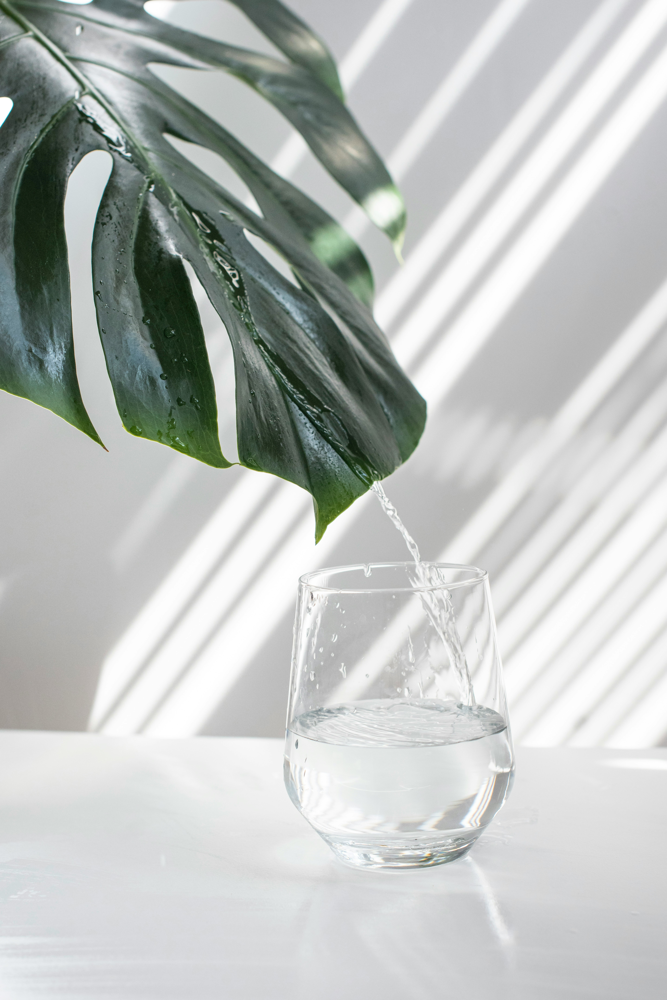
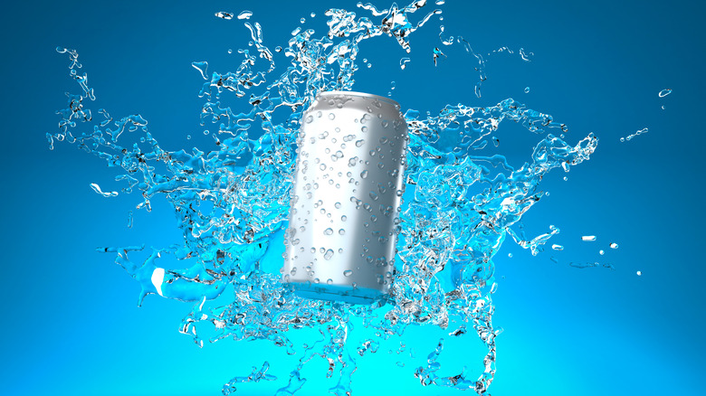

Why climb a mountain for a spring
when the spring comes to you? Our tap
water is cold, reliable,
and ready at 3 a.m. when you wake up
thirsty and confused. No cape, no battery, no subscription,
just pure, wet greatness. Vesitori salutes you.
Rain water

Price: 1.29€
Why settle for water that has been sitting
in pipes when you can have water that just
fell from the clouds? Our rain water is
collected fresh, fills your glass with a little
sparkle of sky, and arrives with its own bragging
rights. Tap water is a loyal friend, but rain water is its
famous cousin who travels and has stories to tell. Vesitori:
we catch the sky so you don't have to.
Canned water

Price: 1.39€
Some water likes to travel light.
Ours puts on a tiny metal suit,
hops into a can, and waits patiently for you
to go psssht. It fits in your bag, survives
the bus, and never spills in your backpack
(we are mostly sure). Rain water fell from the sky,
tap water came through the pipes, and canned water
is the cool one that shows up with its own packaging
and a sense of style. Vesitori:
because even water deserves a little armor.